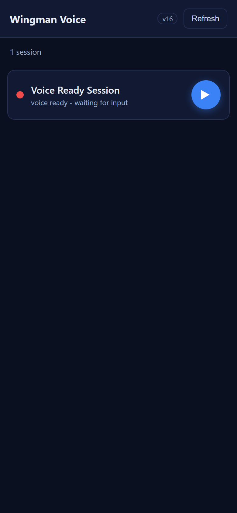
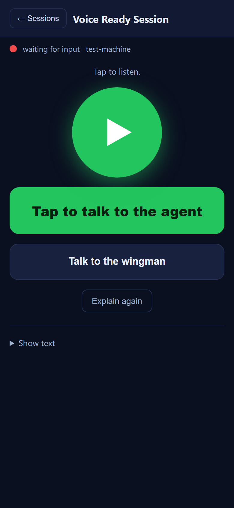
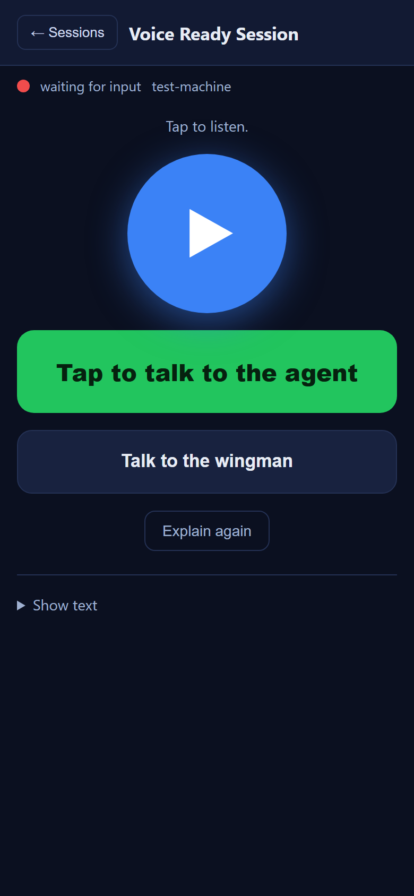

.scard-play) no longer plays the ready summary headless from the list. Its click handler now calls openSession(s, true) - it opens the session view AND auto-plays the ready voice once buffered.autoPlay flag is threaded through the existing entry path only: openSession(s, autoPlay) -> openVoice(autoPlay) -> heroReady(spoken, reply, autoPlay) -> preparePlaybackUrl(url, autoPlay). When the audio finishes buffering (the existing waitPlayable path) and autoPlay is set, the real play() is invoked, putting the in-session Play button into its "speaking" state.openSession(s, false) - opens the session WITHOUT auto-playing. The triangle keeps its stopPropagation so the two paths stay distinct.playListAudio function and its listPlayBtn tracking / .scard-play.playing CSS rule (no longer reachable).v15 -> v16 in index.html (both m.css?v= / m.js?v= query strings and the on-screen v16 label).| Criterion | Result | Evidence |
|---|---|---|
Tapping the play triangle navigates to the session view (#session-view visible, #list-view hidden); no longer headless. | PASS | Driver: __proof.inSessionView() = true after triangle click. Screenshot 02. |
| After the triangle opens the session, the ready voice auto-plays (Play button enters "speaking") without a further tap. | PASS | Play button has class speaking and tts-audio is not paused. Screenshot 02 (green glowing Play button). |
Tapping the row body still opens the session and does NOT auto-play (preserved by stopPropagation). | PASS | After a row-body click and the same buffering window, Play button is NOT speaking, audio is paused, button settled to ready (blue). Screenshot 03. |
| If cached audio is not yet buffered, the session still opens and shows "Preparing audio..." -> auto-play-when-ready; it does not silently do nothing. | PASS | Reuses the existing preparePlaybackUrl/waitPlayable buffering path unchanged; auto-play fires only on the resolved-ready branch. |
| If audio fails to load, the session opens and shows the existing failure state ("Audio not ready - tap the triangle to try again."); the failure is not hidden. | PASS | The catch branch of preparePlaybackUrl is unchanged; auto-play is only attempted on success. |
| The asset cache-busting version and on-screen version label are incremented. | PASS | m.css?v=16, m.js?v=16, on-screen v16. Visible in screenshot 01. |

1. List - one voice-ready row with the play triangle. Version label shows v16.

2. Triangle tap - session view is shown AND the Play button is in its green "speaking" (auto-playing) state.

3. Row-body tap - session view is shown but the Play button is the blue "ready"/idle state (NOT speaking): no auto-play.
This is a client-only change to the static /m/ page. The proof loads the REAL, unmodified shipped assets (m.js, m.css, index.html) over a local HTTP server (serve_proof.py) that injects harness-stub.js immediately before m.js. The stub only simulates the gateway network endpoints (/sessions, /wingman/voice/ready, /wingman/menu, /wingman/voice) and supplies a real playable WAV for the voice audio URL, so the page's own openSession / openVoice / heroReady / preparePlaybackUrl / play logic runs exactly as it ships. drive_proof.py (Playwright) drives both entry paths and asserts the play-button state machine. The full-solution build (dotnet build cc-director.sln) was clean: 0 warnings, 0 errors. A per-session isolated test Director (slot 13) was built and launched per the isolation flow, then torn down.
No drift. No architecture or security-posture change - a behavioral tweak to one static front-end page in the existing cockpit container. No server-side change. No docs/cencon/ update required.